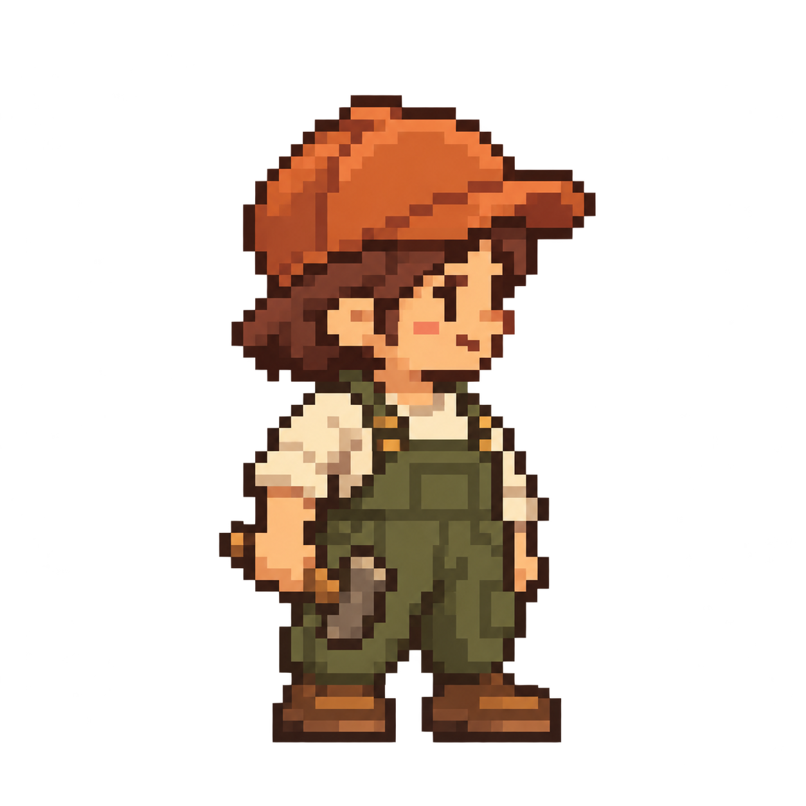

Mina 외형 시안 v1
승인된 외형으로 만든 실제 48×48 후보 검토
둥근 작업 모자 · 올리브색 멜빵 · 작은 빌더 · 오른쪽 중립 자세
외형 검토용입니다. 원본은 1254×1254 RGBA이며 아래는 브라우저에서 48·96·144 CSS px로 축소한 표시입니다. 정확한 48×48 스프라이트의 1×/2×/3× 검증은 아직 아닙니다.
확대 시안

원본 시안 — 320 CSS px 표시
작은 표시와 배경 대비
48 CSS px
96 CSS px
144 CSS px
48 CSS px
96 CSS px
144 CSS px
48 CSS px
96 CSS px
144 CSS px
검토 항목
- 모자·머리·몸통의 윤곽이 작은 크기에서도 기억되는가?
- 차분한 작은 빌더라는 제품 분위기에 맞는가?
- 따뜻한 모자와 절제된 멜빵 색 배치가 적절한가?
- 망치가 무기처럼 보이지 않고 작은 작업 도구로 읽히는가?
외형 승인 후에도 정확한 픽셀 격자, 색 수, 알파 가장자리, 피벗과 발 접점 검증이 필요합니다. 아직 게임에 적용되지 않았습니다.